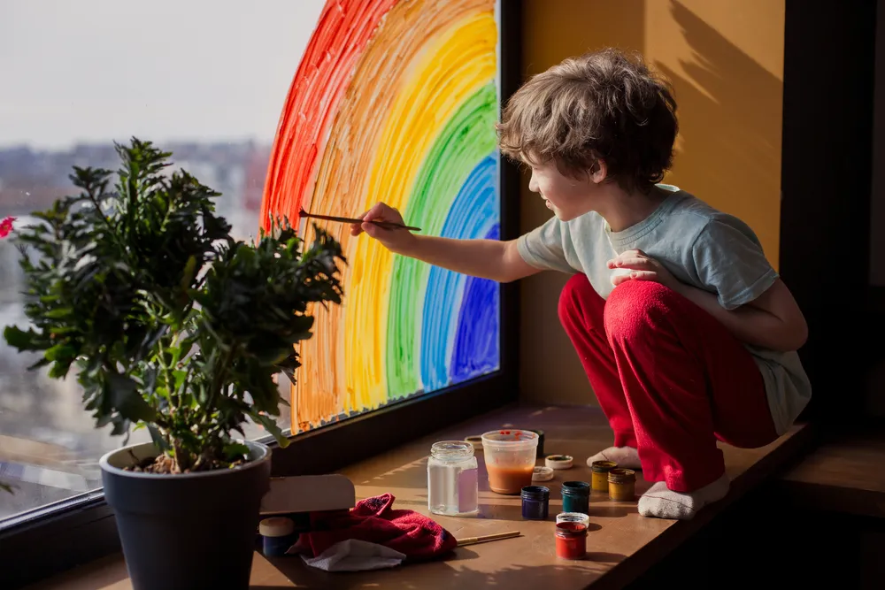

How to Maintain Mental Wellbeing During Isolation

Sometimes when things are stressful, all you want to do is get to your home and forget about the outside world. However, being isolated for extended periods of time is not healthy for the body or the brain, as has been evidenced by research aimed at seniors.
More people than ever might find themselves spending more time indoors than they had planned on, which actually has more than one upside . However, there are some inherent negatives to being a shut-in, so let’s look at ways to maintain your mental health if you’re indoors for days or weeks…
Try Meditation
This technique may give you a bit more breathing room at home – literally. Cosmopolitan explains that being distant from other people can lower your oxytocin levels, which ends up boosting stress and having a negative effect on the immune system.
The source claims that meditation is one way you can help mitigate the impact to your immunity, noting it increases a particular antibody that makes it more difficult for illness-causing viruses to pass into the bloodstream. There are some meditation apps available to help guide your journey.
Reconnect With Old Acquaintances
If you’re indoors without anything to do, then you can start browsing your social media for people you haven’t connected with for some time to catch up. Even better, make it a phone call, notes BestHealthMag.ca .
This will help not only benefit you though social connection, but you will help the others feel more supported at the same time, adds the source. Phone calls and social media are not the only ways to connect: you could video chat or turn to the age-old practice of letter writing. Try “connecting deeply” with someone for at least 15-minutes daily, it adds.
Manage Your Work-From-Home Stress
Just because you’re at home, doesn’t mean there’s not business to take care of. More people than ever are finding themselves working from home , and that means balancing home/work life in one location.
There are a few ways to separate your work from your family life while you’re fulfilling your career from home. That includes creating a physically separate area for work that’s only for work, suggests Medical News Today . If you have lots of family members milling about, chat with them about boundaries so you can be productive, it adds.
Breathe Out Tension
Being stuck indoors can be stressful, especially if there are others in the home adding to that situation. However, you don’t need to hide in the attic or punch pillows to keep yourself from stress overload.
Cosmopolitan suggests you “practice recovery breathing,” which basically entails breathing into the diaphragm through the nose and out through the mouth to a steady count for both. The source suggests a five count for breathing in and seven count when exhaling, or you could make them both 7-seconds.
Stick To a Routine
If you’re stuck indoors, then it’s easy to sleep in and not bother to put clothes on all day or wear the same thing every day. Changing patterns every day isn’t helpful when it comes to managing anxiety during isolation for extended periods of time.
Nature.com says that sticking to a routine will help you get used to the home routine, and that includes if you work from home as well. You should also factor in some time to do something fun that isn’t work-related, it adds. Remember if you’re working from home, you don’t need to work in “blocks” – you can space out your work to help you reduce stress and stay sharp, notes the source.
Use Art To Soothe Nerves
If you don’t have a lot of work to do while you’re indoors, then it’s a perfect time to create something beautiful. While art therapy can often be found in clinical settings, pursuing an artistic endeavor – whether it’s painting or playing guitar – can help you get through boredom while also stimulating the brain.
The Huffington Post cites a study that suggests stress levels can be reduced significantly after just 45-minutes of partaking in creative activity. The study to measure the impact provided participants with markers, clay and other materials, and gave them free license to create whatever they wanted, notes the source.
Get Moving
If you’re isolated for any reason, it may not be as easy as stepping outside for a jog around the block. But just because you find yourself within four walls for days on end doesn’t mean you can’t move your body to get the health benefits, which are both physical and mental.
As examples, you could try downloading dance apps to follow along with. But there many other forms of activity you can try at home, such as yoga, Pilates, and even stair-climbing. Do laps around your yard if you’re able. Just keep in mind that a sedentary lifestyle (lack of activity) carries risks of psychological issues, notes Forbes . Many gyms and studios are offering virtual classes so you can still get your workout and enjoy the company of others.
Maintain a Healthy Diet
When you’re indoors for long periods of time, your thoughts might drift to eating junk food while binge-watching the newest series on Netflix. But being inside also presents an opportunity for you to up your cooking game and get more creative in the kitchen – using healthy ingredients, of course.
Cosmopolitan suggests experimenting with popular comfort food dishes by swapping a few ingredients in order to make them healthier. For example, you could replace about a third of the meat in your meatballs with oats, exchange some of the meat in Shepherd’s pie for lentils, or change up lasagna with sliced leeks in place of pasta sheets.
Source: https://activebeat.com/your-health/how-to-maintain-mental-wellbeing-during-isolation/